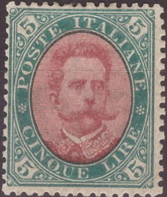
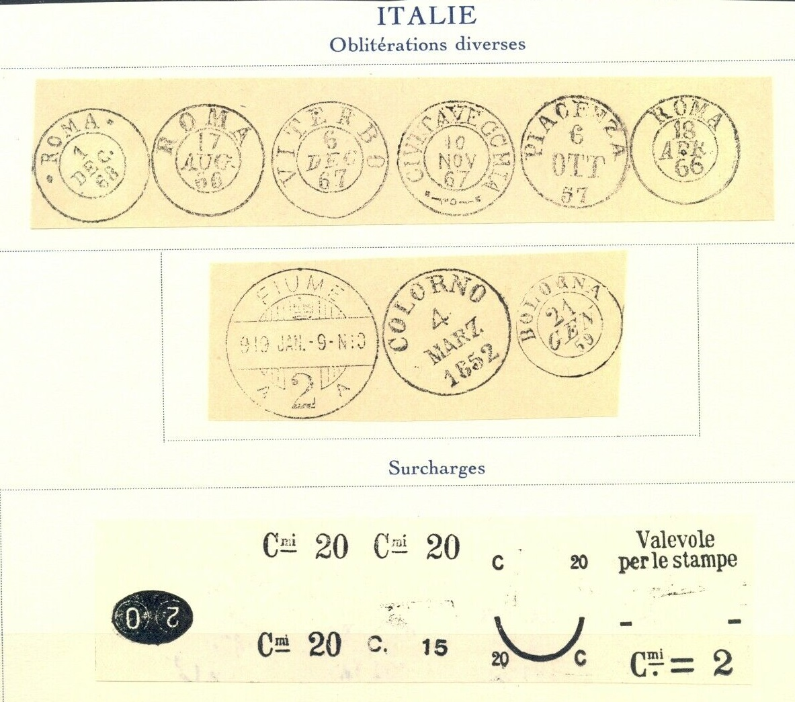
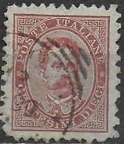

Return To Catalogue - Italy overview
Note: on my website many of the
pictures can not be seen! They are of course present in the
catalogue;
contact me if you want to purchase the catalogue.
2 c yellow
This stamp was printed in sheets of 100. The same stamps in grey (values 1 c and 2 c) were issued in Sardinia.
Value of the stamps |
|||
vc = very common c = common * = not so common ** = uncommon |
*** = very uncommon R = rare RR = very rare RRR = extremely rare |
||
| Value | Unused | Used | Remarks |
| 2 c | *** | *** | Issued 1 Mai1863 Exists with value inverted: R |
1 c green 2 c brown
For the specialist, these stamps have watermark crown and perforation 14. They were issued in sheets of 100.

Watermark 'Crown' on the backside of two 2 c stamps
Value of the stamps |
|||
vc = very common c = common * = not so common ** = uncommon |
*** = very uncommon R = rare RR = very rare RRR = extremely rare |
||
| Value | Unused | Used | Remarks |
| 1 c | c | c | Issued 1 December 1863 |
| 2 c | c | vc | Issued 1 March 1865 |
Essay of the 1863 issue

Another essay from 1864 with a sitting woman and inscription
"AMMINISTRAZIONE DELLE POSTE ITALIANE". I've seen this
essay in the colors red, black, brown and light green.
1 c brown (1896) 2 c brown (1896) 5 c green (1889) 5 c green (other type, 1890) 5 c green (other type, 1897)
For the specialist, these stamps have watermark crown and perforation 14.
Value of the stamps |
|||
vc = very common c = common * = not so common ** = uncommon |
*** = very uncommon R = rare RR = very rare RRR = extremely rare |
||
| Value | Unused | Used | Remarks |
| 1 c | c | c | |
| 2 c | c | vc | |
| 5 c | *** | c | 1889 |
| 5 c | *** | c | 1890 |
| 5 c | c | vc | 1897 |
I've seen postal stationery in the 5 c (1889) and 5 c (1897) design.
So-called Sparre Essays in a similar design, issued in 1862, inscription 'ITALIA' on top, 'FRANCO' left, 'BOLLO' right and 'POSTE' at the bottom, cross with crown in the center:
I have seen the following values: 1 c green, 5 c red on grey, 10 c blue on red, 30 c violet, (?) yellow , 80 c brown, 3 L brown and 3 L black. I suspect that forgeries of these essays exist, in view of the large amount of these stamps I have seen.....



1889 issue
1893 issue
5 c green 10 c red 10 c red (1893, different frame) 20 c orange 20 c orange (1893, different frame) 25 c blue 25 c blue (1893, different frame) 30 c brown 40 c brown (1889) 45 c green (1889) 45 c green (1893, different frame) 50 c violet 60 c violet (1889) 1 L brown and yellow (1889) 2 L orange 5 L green and red (1889) 5 L red and blue (1891)
These stamps have watermark 'Crown' and perforation 14.
Value of the stamps |
|||
vc = very common c = common * = not so common ** = uncommon |
*** = very uncommon R = rare RR = very rare RRR = extremely rare |
||
| Value | Unused | Used | Remarks |
| 5 c | * | c | |
| 10 c | *** | c | |
| 10 c | c | vc | 1893 issue |
| 20 c | *** | vc | |
| 20 c | c | vc | 1893 issue |
| 25 c | *** | c | |
| 25 c | c | vc | 1893 issue |
| 30 c | *** | RR | |
| 40 c | * | c | |
| 45 c | RR | c | |
| 45 c | * | c | 1893 issue |
| 50 c | * | c | |
| 60 c | ** | * | |
| 1 L | ** | * | |
| 2 L | *** | RR | |
| 5 L green and red | *** | RR | |
| 5 L red and blue | *** | *** | |
Surcharged

'2 Cm' on 5 c green 'Cmi 20c' on 30 c brown (1890) 'Cmi 20c' on 50 c violet (1891)
Value of the stamps |
|||
vc = very common c = common * = not so common ** = uncommon |
*** = very uncommon R = rare RR = very rare RRR = extremely rare |
||
| Value | Unused | Used | Remarks |
| 2 c on 5 c | ** | ** | |
| 20 c on 30 c | *** | c | |
| 20 c on 50 c | *** | * | |
For the specialist: after forgeries of the 5 L green and red became known, consisting of the outer part of a 5 c green and the center part of a 10 c red (see next image), these stamps were withdrawn from circulation in July 1891. The 30 c brown, 2 L orange and 5 L green and red are very rare in used condition; forged cancels exist!

5 c stamp of 1889 with center replaced by a center of the 10 c
red, pretending to be the 5 L green and red stamp.
Fournier forged overprints, image taken from a 'Fournier Album of
Philatelic Forgeries' (reduced size)

These stamps overprinted with 'ESTERO' were used in the Italian post offices in the Levant click here, (slightly different design). The 25 c stamp with surcharge '1 PIASTRA 1' was issued for Crete.
Postal stationery in the same design:
Postcards exist with King Humbert surrounded by pearls (no inscription and no value). Furthermore a 7 1/2 c red and a 10 c red (see images above). Other postal stationary exists (money transfer cards) with the image of King Humbert.

A 5 c stamp with a forged inverted 'Cmi 2' surcharge.


In 1893 another non-issued stamp with the King and Queen facing the left was prepared in the value 20 c (sorry, no picture available yet, if anybody has an image please contact me!).


{kind=link}
{kind=link}
{kind=link}
{kind=link}
{kind=link}
{kind=link}
{kind=link}